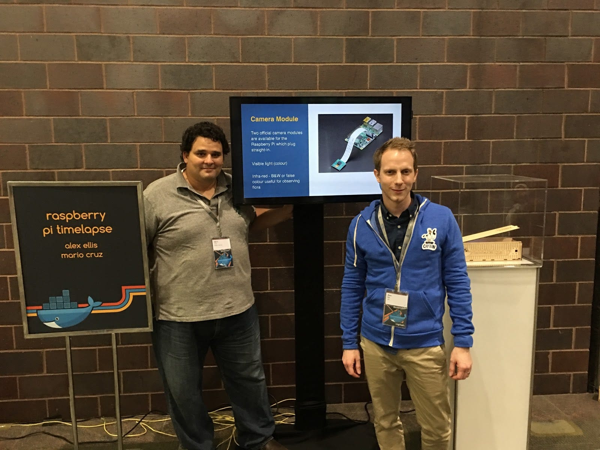

Collaboration across the pond - Mario the Maker from Miami, FL and Docker Captain Alex Ellis from the UK work together on an awesome project.

At the 2016 DockerCon in Seattle, I went to see a talk by Alex Ellis about Docker & IoT: protecting the Datacenter. It was a great talk, and since I had been working on IoT devices myself and was impressed, I decided to check out his blog when I got back home.
The Collaboration
Alex had just published an excellent blog post on running a time-lapse project with Docker and a Raspberry Pi about the same time I was working on projects for Miami's first full-blown Maker Faire. That was when Alex asked if I would be interested in building a case using the instructions from his blog post for timelapse video using Docker for DockerCon in Austin.
We wanted to use a WD PiDrive BerryBoot Edition 1TB hard drive in the case so we could store as many photos as we wanted without worrying about running out of space.
The Build
I thought a shipping container would make the perfect case for everything. Creating the case was a fun experiment of scaling and manipulating the size to keep the Pi and drive snug. This would allow me to minimize the hardware used on the case. I also wanted the case to be collapsible so that Alex could easily transport it back to the UK after the event.
Double-sided tape was used on an old laptop hard drive caddy to attach the drive to the bottom of the box. For the Pi, I laser cut a bottom piece and then attached the Pi to the laser cut board with screws, while adding double stick tape to the bottom board. The camera was then attached to a special camera hole made for the Pi camera. As a finishing touch, I matched the Docker container theme by adding the DockerCon logo.
Making at Moonlighter
At Moonlighter Makerspace I have access to a Full Spectrum Laser PRO 24X36. It takes about twenty minutes to cut the case. Before I moved to cut the pattern out in wood, I cut many renditions out of old cardboard. I spent $5.00 for the craft oak plywood, $30.00 for the Raspberry Pi, and the drive was donated by Western Digital.
Obviously, without the resources at Moonlighter, this project would have been pretty tough to make. Go support your local Maker and Hacker space!
Project Files
Stay tuned as Alex and I will be collaborating on future projects around IoT, Pi and whatever Alex codes or posts on his blog that I can use to make the next thing.
Related
-
Restoring a 1984 Tomy Omnibot — Part 4: It's Alive
IoT and edge computing on real hardware, almost a decade later.
-
Open Source Face Shields
When the maker community shipped 18,000 pieces of PPE during COVID.